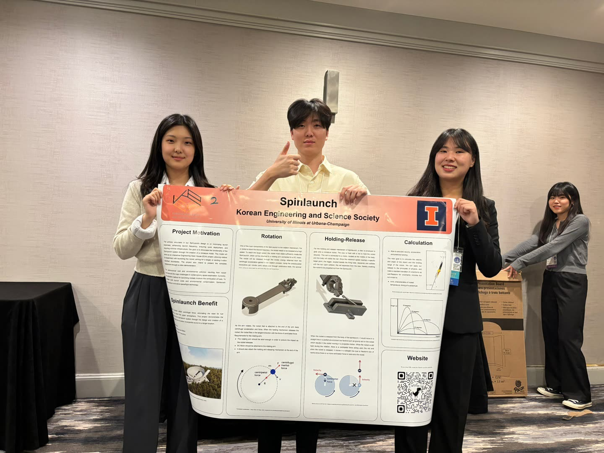
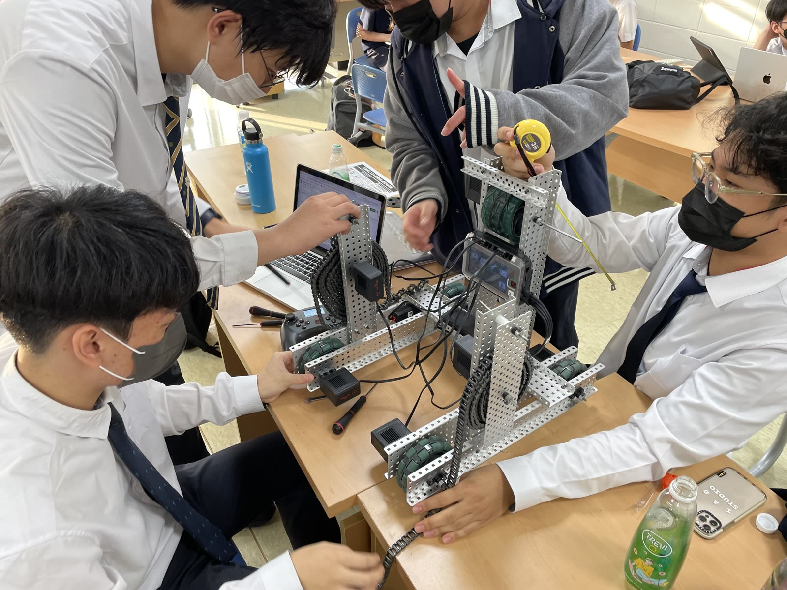
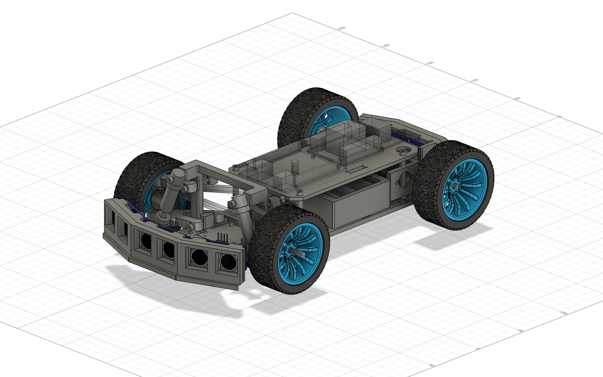

Mechanism design
CAD-driven design in Fusion 360 — structure and geometry chosen for how the machine has to move, not just how it looks.
Jae Geun Hong · Mechanical Engineering, UIUC
I'm a mechanical engineering student at the University of Illinois Urbana-Champaign, interested in how structure and mechanism geometry shape motion — the kind of design where a CAD decision changes how a machine actually moves.
Now — getting into legged & jumping robot locomotion
About
Most of what's here started as a hands-on question: how do you build the thing, not just model it.
Outside coursework, I spend most of my project time on CAD-driven mechanism design, 3D-printed fabrication, and embedded control — currently getting into legged and jumping robot locomotion in particular.
CAD-driven design in Fusion 360 — structure and geometry chosen for how the machine has to move, not just how it looks.
3D-printed parts, hands-on assembly, and repeated test runs to tune a design against the real world.
Motor control and pre-programmed autonomous routines that turn a built mechanism into a working machine.
Selected work
Two team builds taken from CAD all the way to judges — and a personal project that is still on the bench.

A functional centrifugal launch mechanism, shown at KSEA MRC and the UIUC Engineering Open House.

As team leader, designed and built the robot that won the national competition.

An obstacle-avoiding RC car designed in Fusion 360 — Ackermann steering, double-wishbone front suspension and a gear-driven rear axle, built around an Arduino Uno.
Case study · KSEA MRC 2024 · UIUC EOH
A functional centrifugal launch mechanism — designed, 3D-printed and tested with a 6-person team, then presented to judges and visitors.
Traditional rockets rely on fuel combustion to reach the upper atmosphere — expensive and environmentally costly. SpinLaunch's centrifuge-based approach stores energy mechanically instead: it spins a payload up to release speed and then lets it go, removing the need for a chemical burn during that phase of launch.
Our model demonstrates that mechanism at a small, interactive scale, built for the UIUC Engineering Open House.
How it works
A DC motor drives a rotating arm with the projectile mounted at its end. As the arm spins up, the projectile builds centrifugal acceleration — hitting a specific trajectory means reaching a precalculated RPM, tuned through repeated test launches. The arm has to be rigid enough to survive the impact load at release and carry the holding-release mechanism at its tip without flexing.
A claw fixed to a rod grips the projectile through spin-up. Once the arm reaches its target speed, a trigger beside the firing tube drops and collides with the rod, separating it from the claw and releasing the projectile. With no centripetal force acting on it anymore, Newton's first law takes over: it flies off along a straight tangent line until gravity turns it into projectile motion.
Once released, the projectile's velocity and launch angle determine where it lands — standard projectile-motion physics. We used that relationship to predict landing range, then built in a standard deviation to account for real-world uncertainty: wind, the projectile's own characteristics, ambient temperature and parachute deployment timing.
Interactive
Drag to rotate · Click, then scroll to zoom Drag to rotate · Pinch to zoom
Build & test log
Tap any clip to watch it full-size with sound.
Case study · Team leader
As team leader, I designed and built the robot that won the national competition — from the chassis and claw blueprint to the autonomous code.
Hardware
Personal project · Fusion 360 · Arduino Ongoing
An obstacle-avoiding RC car I'm designing from the ground up — servo Ackermann steering, an unequal-length double-wishbone front end with coil-over shocks, and a gear-driven rear axle, all generated from a parametric Fusion 360 script and verified in CAD before printing.
A small autonomous car that reads its surroundings with ultrasonic sensors and steers around obstacles — and a chance to design real vehicle geometry instead of a toy chassis: camber gain, kingpin inclination, roll center and spring rates, all worked out and checked in CAD.
The whole car is generated by a Fusion 360 Python script: one run builds 13 parts and 27 bodies, and every dimension lives in a single parameters file, so a change to the wheelbase or wheel size ripples through the entire model.
How it's built
Servo-driven Ackermann steering on an unequal-length double-wishbone front end with coil-over shocks — 7.84° kingpin inclination, −1.5° static camber, 6° caster and a roll center 4.5 mm above the ground.
A 6 V, 280 rpm JGA25-370 gear motor turns a ø5 mm live rear axle on four MR105ZZ bearings through a 1:1, module-0.8 spur-gear pair.
Two decks — drivetrain below, electronics above on M3 standoffs. Every part fits a 220 × 220 bed, and the A-arms are modeled flat and rotated about their hinge axis so they print without supports.
An Arduino Uno and an L298N motor driver sit on the upper deck, powered by three 18650 cells. A separate LM2596 buck converter feeds 5 V to the servo and sensors — the servo's 700 mA+ start-up current would otherwise brown out the Uno's own regulator and reset the board.
Four HC-SR04 sensors fired together would hear each other's echoes, so they are triggered round-robin: 60 ms per sensor, a full scan every ~240 ms. At ~1 m/s the car covers over 20 cm between scans — so the avoidance logic needs at least 40 cm of warning.
Engineering notes
Problems that calculation alone missed — found by checking the model before printing anything.
Off-the-shelf shocks were 60 mm eye-to-eye with ø5/ø6 bores against a 50 mm, M3 design. Raising the shock tower to fit them would have dropped its bending safety factor from 2.8 to below 2.0, so the shock body and rod became printed PETG parts and only the spring is bought — 0.78 N/mm, sized from an 800 g car, 45 % front weight and a 0.57 motion ratio.
Modeled from datasheet dimensions, the assembly showed zero interferences. Dropping in the manufacturers' CAD exposed problems in 7 of 8 parts — a 65.9 mm motor instead of 71, ø68 wheels instead of ø65, a deeper servo case — so the rear carrier, axle height and servo pocket were all reworked.
Solved the four-bar suspension linkage at 9 travel positions and measured the clearance between 3 moving and 7 fixed parts at each one. Past −7.5 mm of droop the lower arm reaches the chassis plate, so travel is set to +10 mm bump / −5 mm droop, with a camber gain of −0.095°/mm.
The 19.2 mm gear center distance loses its backlash if it drifts by just 0.3 mm. Putting the axle bearing bores and the motor face on a single printed carrier means print accuracy alone holds the mesh — no separate motor mount to misalign.
Contact
Mechanical Engineering, University of Illinois Urbana-Champaign. Reach out by email or connect on LinkedIn.